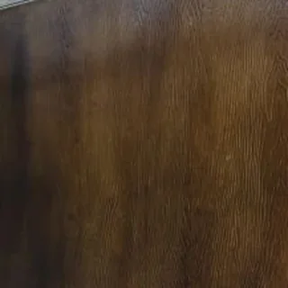
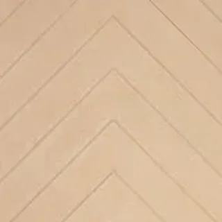
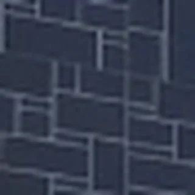
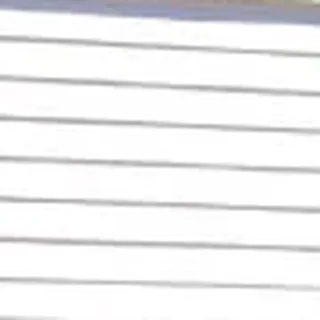

Simulador de ambientes
Mira cómo queda tu pared antes de comprar.
Sube una foto de tu sala, tu fachada, tu techo o tu local, elige uno de los 10 acabados Eterboard Design y en menos de un minuto ves el antes y el después en tu propio espacio.
- 10 acabados
- 20–60 s por simulación
- Gratis sin registrarte
Toca un acabado para probarlo en tu foto
 Ladrillo MuiscaRelieve de ladrillo en tono arena
Ladrillo MuiscaRelieve de ladrillo en tono arena
CedarVeta de madera cedro, tono oscuro Listones CedarListones verticales con veta de madera
Listones CedarListones verticales con veta de madera Listones 7CListones verticales lisos, tono arena
Listones 7CListones verticales lisos, tono arena
VectorPatrón en espiga, tono arena Piedra NaturalRelieve de piedra laja, tono claro
Piedra NaturalRelieve de piedra laja, tono claro
PizarraLosas de pizarra gris carbón Tablilla LisaTablillas lisas grafito
Tablilla LisaTablillas lisas grafito
Tablón CedarTablones horizontales con veta, blanco ModularPlacas modulares en grises
ModularPlacas modulares en grises
Qué puedes hacer
Tu espacio, con otro acabado, en una foto.
Funciona en paredes, techos, columnas y fachadas, por dentro y por fuera.
Usa una foto tuya
Tómala con el celular o súbela desde el computador: la sala, una alcoba, la fachada, el techo de la terraza o tu negocio.
Elige qué revestir
Marca con unos toques la pared, el techo o la columna que quieres cambiar. Lo que queda por fuera de la zona no se toca.
Compara acabados
Prueba madera, ladrillo, piedra o pizarra sobre la misma foto y desliza para ver el antes y el después.
Guárdala y compártela
Descarga la imagen con el nombre del acabado o mándala por WhatsApp a tu familia, tu arquitecto o tu maestro de obra.
Gratis · sin registrarte
Pruébalo con tu foto.
Sube la foto, marca lo que quieres revestir, elige el acabado y mira el antes y el después.
- 1Foto
- 2Zona
- 3Acabado
- 4Resultado
1. La foto
- De frente a la pared y con buena luz.
- Que se vea la pared completa, de esquina a esquina.
- Si es la casa de otra persona, pídele permiso antes de subir la foto.
2. ¿Dónde van los paneles?
Toca en la foto las esquinas de la superficie que quieres revestir (pared, techo, columna o fachada) y cierra la forma tocando el primer punto. Puedes marcar varias zonas. Si prefieres, la IA reviste la pared principal.
3. Elige el acabado
4. Así queda
Simulación ilustrativa: el tono y la textura reales pueden variar. Confirma con la muestra física y la ficha técnica. Catálogo Eterboard Design (PDF, 15,7 MB)
La foto se usa solo para crear la simulación con el servicio de IA y este sitio no la guarda.
Simulaciones de esta visita
Toca una para volver a compararla. Se borran al cerrar la página.
Para quién es
Decide con la foto, no con la imaginación.
Si vas a remodelar
Antes de gastar, mira si la madera o la piedra le van a tu sala o a tu fachada, con tu luz y tus muebles.
Si diseñas o construyes
Muéstrale al cliente una propuesta sobre la foto de su propio espacio en minutos, sin renders ni programas especiales.
Si tienes un negocio
Imagina la nueva cara de tu local, tu restaurante o tu oficina antes de cerrar por obra.
Si vendes Eternit
Toma la foto de la pared de tu cliente en el mostrador y muéstrale cómo queda con cada acabado. Decide más rápido y con más confianza.
Simulador de ambientes
Preguntas frecuentes.
Actualizado:
¿Cuánto cuesta usar el simulador?
Nada. Es gratis y no necesitas crear una cuenta: subes la foto, eliges el acabado y ves cómo queda.
¿Qué puedo simular?
Paredes interiores y exteriores, fachadas, techos o cielos rasos y columnas. Puedes revestir toda la pared principal o marcar solo la superficie que quieres cambiar, y marcar varias zonas en la misma foto.
¿Qué acabados puedo probar?
10 acabados Eterboard Design: Ladrillo Muisca, Cedar, Listones Cedar, Listones 7C, Vector, Piedra Natural, Pizarra, Tablilla Lisa, Tablón Cedar y Modular. La línea tiene más de 20 acabados; los demás están en el catálogo Eterboard Design.
¿Qué tan parecido a la realidad queda?
Es una simulación ilustrativa hecha con inteligencia artificial sobre tu foto: sirve para comparar y decidir, pero el tono, el brillo y el tamaño de las piezas pueden variar con la luz y la instalación. Antes de comprar, mira la muestra física con tu distribuidor y revisa la ficha técnica.
¿Cuánto se demora?
Entre 20 y 60 segundos. La calidad rápida tarda unos 20 segundos y la máxima, con más detalle, unos 40. Si la IA casi no cambia la zona marcada, lo intenta una vez más por su cuenta.
¿Qué pasa con mi foto?
Se usa solo para crear la simulación: se envía al servicio de IA, no se publica y este sitio no la guarda. Las simulaciones que hagas quedan en tu navegador mientras tengas la página abierta.
¿Funciona en el celular?
Sí. En el celular puedes tomar la foto con la cámara desde el mismo simulador. Sirven fotos verticales u horizontales, en JPG, PNG, WebP o HEIC, de hasta 40 MB.
¿Cómo tomo una buena foto?
De frente a la superficie, con buena luz y sin contraluz, y mostrando la pared completa, de esquina a esquina. Usa la foto original de la cámara: las que se reenvían por WhatsApp pierden calidad.
¿Hay un límite de simulaciones?
Sí. Esta demo tiene un tope diario de simulaciones para todos los visitantes. Si se alcanza, el simulador te avisa y puedes volver a intentarlo al día siguiente.
¿Dónde compro Eterboard Design?
Con la red de distribuidores Eternit. Escríbenos por WhatsApp al +57 321 337 7648 y te decimos cuál te queda más cerca, o llama gratis a la línea 01 8000 115 660.
¿Qué es Eterboard Design?
Son placas de cemento, sílice, fibras de celulosa y aditivos, curadas en autoclave, con acabados de madera, ladrillo, piedra o pizarra. Se usan en muros interiores y fachadas y son sustrato y acabado a la vez.
¿Ya elegiste tu acabado? Encuentra tu distribuidor.
Lleva tu simulación en el celular: un asesor te ayuda a calcular las placas y a encontrar el distribuidor más cercano.